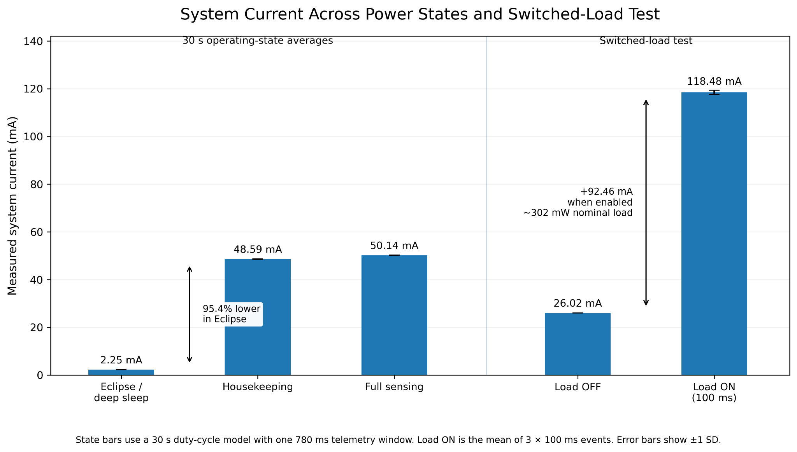
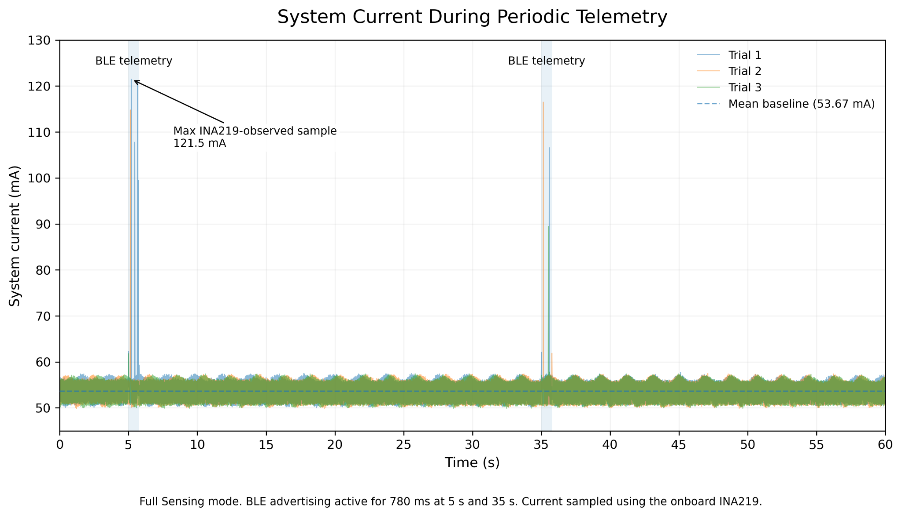
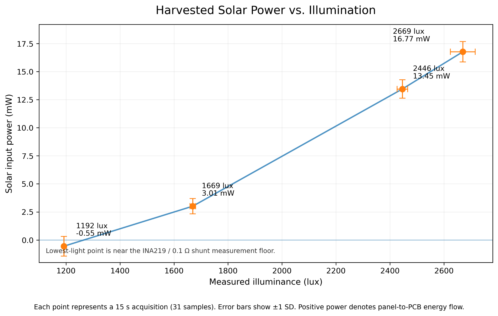

Adaptive Power Management Testbed & PCB
PERSONAL PROJECT · MAY 2026 – AUG 2026

About
A custom ESP32-C3 board I designed and brought up myself, built as a physical testbed for the power budget work I was doing on Duke's ChipSat subsystem for the Solar Sail project.
Tools
KiCad, ESP32-C3, soldering & rework, oscilloscope, INA219 current sensing, Fusion 360
Where this came from
While I was leading sensor subsystem work for Duke's ChipSat program, I ended up writing the power budget: eclipse survival, duty cycling, how long a 5g LiPo battery could actually last between recharges. All of that lived in spreadsheets and simulations. What I wanted to know was whether the firmware decisions I was modeling on paper actually behaved the way I expected on real hardware. So I designed my own board to find out.
I was not trying to reproduce flight hardware. I wanted something small and testable, where I could keep the physical hardware fixed and only change firmware, then measure exactly what happened to current draw.
What's on the board
It is a 45mm by 45mm, two layer board built around an ESP32-C3-MINI-1 with native USB. Everything on it was chosen to mirror a real power system: solar input and Li-ion charging through a BQ25185, two INA219 monitors so I could watch current on both the solar input and the main system rail at the same time, a VEML7700 for ambient light, and an ICM-42688-P IMU over SPI standing in for attitude sensing. There is also a switchable +3V3_SENS rail for the sensor domain, and a 36 ohm load behind a solder jumper that draws about 300mW when bridged, roughly the scale of a single magnetorquer firing.
For telemetry, I used the ESP32-C3's own BLE radio as a stand-in for LoRa downlink, keeping the same 780ms transmission window and cadence from the mission power model. It does not reproduce actual LoRa RF behavior, but it gave the firmware a real wireless workload to schedule around instead of a simulated one.
Three firmware states, one board
I modeled three operating states that mirror how a small spacecraft would actually schedule power: eclipse sleep, where the MCU sleeps between events and only wakes to advertise telemetry; housekeeping, active but with the sensor rail and IMU off; and full sensing, with everything on. Each one maps to a real mission decision about what needs to stay powered and what can wait.

Deep sleep cut average current by 95.4%, from 48.59mA in housekeeping down to about 2.25mA in eclipse. Full sensing came in close to housekeeping at 50.14mA, since the IMU and sensor rail add relatively little on top of an already active MCU. The switched load test told a different story: flipping on the 300mW load pushed current from a 26.02mA baseline up to 118.48mA, close to what I calculated from the resistor value beforehand. It was a good sanity check that the electrical math and the measured hardware actually agreed.
What telemetry actually costs
Once I had the steady state numbers, I wanted to see what a telemetry event looked like in time rather than as an average. I held the board in full sensing for 60 seconds and enabled BLE advertising for 780ms at the 5 and 35 second marks, matching the 30 second interval from the mission schedule.

The baseline was remarkably repeatable across all three trials, sitting at 53.67mA every time. The radio windows showed up as short, clean spikes rather than dragging the whole cycle up, which is exactly what the duty cycled schedule was supposed to achieve. At this cadence the radio is only active for about 2.6% of the cycle.
Measuring the sun
Cutting consumption only solves half the problem, so I also wanted to see if I could tie environmental light to actual electrical power coming back into the board. The solar side INA219 measured panel voltage and current while the VEML7700 recorded illuminance, across a few different lighting conditions.

Above a certain brightness the relationship was clean. The lowest light point sat close to the INA219 and 0.1 ohm shunt's measurement floor, which is why it reads slightly negative with a wide error bar. Rather than throw that point out, I kept it and just noted where the measurement stopped being trustworthy.
Bring up, the unglamorous part
Un-surprisingly, none of this worked on the first try. I brought the board up in pieces, power rails first, then native USB, both INA219 monitors, the VEML7700, SPI to the IMU, and only then the switched rail and solar path. A few issues along the way changed how I thought about the design:
- The ESP32-C3 only has one I2C controller, but the board has two physical I2C buses, so firmware has to remap the controller between them. I learned this the hard way when I disabled the sensor rail before an I2C transaction had fully finished, which left the bus in a bad state. The fix was to always complete the transaction and release SDA and SCL before cutting power to that rail.
- At low light, the solar current dropped close enough to the INA219's resolution that the sign would drift around zero. Instead of filtering that out, I marked it as being near the measurement floor and left it in the dataset.
- Just initializing the BLE stack raised the active current noticeably, even with advertising turned off. That is why the firmware treats "advertising off" and "BLE fully deinitialized" as two separate states instead of assuming they behave the same.
Where it landed
By the end, the board could sit at a very low duty cycled average when energy was scarce and still support a brief high power event when the mission actually called for one, which was the whole question I started with. The hardware, manufacturing files, and bill of materials are all in the GitHub repo, along with the full writeup of every test.